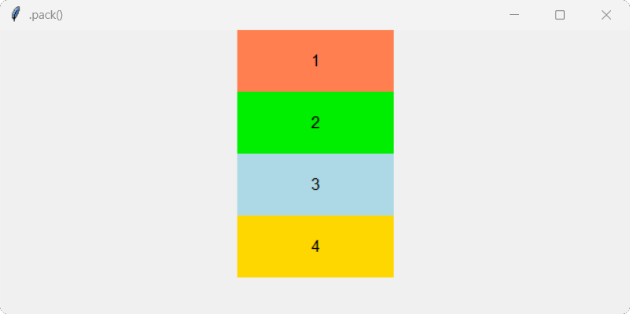
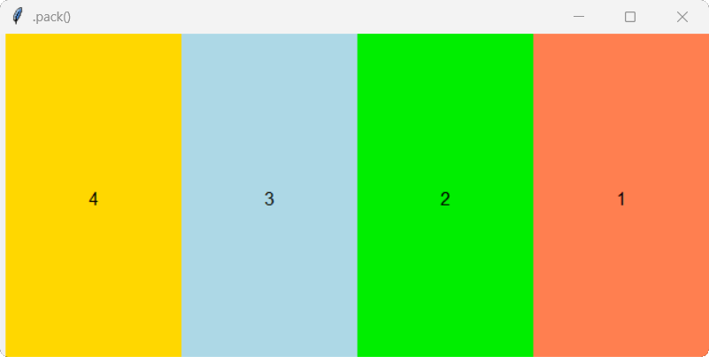

Теоретичний матеріал
Настав час більш детально з’ясуємо питання про розташування віджетів графічної оболонки ,Tkinter у вікні або фреймі. Це важливе питання, тому що від інтуїтивності інтерфейсу багато в чому залежить зручність використання програми.
У Tkinter існує три методи пакування:
- .pack()
- .grid()
- .place()
!Зверніть увагу, що в одному вікні або фреймі можна використовувати тільки один тип пакувальника. При змішуванні різних пакувальників програма, швидше за все, працювати не буде!
Метод .pack()
Як правило цей пакувальник використовують для розміщення віджетів один за одним (зліва направо або зверху вниз). При використанні цього пакувальника за допомогою властивості side можна вказати до якої сторони батьківського віджета він повинен примикати, за допомогою властивості fill можна заповнити віджетом весь простір по горизонталі або вертикалі, властивість anchor – допоможе припасувати віджет до відповідної сторони горизонту.
Властивості .pack():
| Властивість | Значення |
|---|---|
| side |
•
TOP (за замовчуванням) — розміщує віджет зверху
• BOTTOM — розміщує віджет знизу • LEFT — розміщує віджет ліворуч • RIGHT — розміщує віджет праворуч |
| fill |
Змушує віджет заповнити весь доступний простіру вказаному напрямку по одній із
осей:
• X - заповнює простір по горизонталі • Y - Заповнює прострі по вертикалі> |
| anchor |
Змушує віджет припасуватися до однієї із сторін в якому цей віджет розміщений:
• N - (nord) до північнох сторони • S - (south) до південної сторони • W - (west) до західної сторони • E - (east) до східної сторони Значення властивостей можна комбінувати: NW, SE, NSWE, тощо. |
Метод .grid()
Слово grid перекладається з англійської як сітка. Тому віджети цей пакувальник розміщує у сітці, а точніше, у таблиці. Вікно розділяється на рядки та стовпці і кожна комірка в отриманій таблиці може містити віджет. Адреса кожної комірки складається з номера рядка і номера стовпчика. Нумерація починається з нуля. Комірки можна об'єднувати як по вертикалі, так і по горизонталі.
Метод .grid() є найбільш гнучким менеджером геометрії в tkinter.
Розміщення віджета в тій чи іншій клітинці задається через аргументи row і column, яким присвоюються відповідно номер рядка і стовпчика. Щоб об'єднати комірки по горизонталі, використовується атрибут columnspan, якому присвоюється кількість поєднуваних комірок. А опція rowspan об'єднує комірки по вертикалі.
Властивості .grid():
| Властивість | Значення |
|---|---|
| row | Номер рядка в який поміщаємо віджет |
| column | Номер стовпця в який поміщаємо віджет |
| columnspan | Кількість стовпців які займає віджет |
| rowspan | Кількість рядків які займає віджет |
| padx / pady | Розмір зовнішньої межі по вертикалі або горизонталі (розширюється вільний простір) |
| ipadx / ipady | Розмір внутрішньої межі по вертикалі або горизонталі (розширюється сам віджет) |
| sticky |
Вказує до якої сторони припасуватися віджет:
• n - (nord) до північнох сторони • s - (south) до південної сторони • w - (west) до західної сторони • e - (east) до східної сторони Значення властивостей можна комбінувати: nw, se, nwse, тощо. |
| in_ | Розміщує віджет всередині іншого батьківського вікна або контейнера. |
Метод .place()
.place() є простим пакувальником, що дозволяє розміщувати віджет в фіксованому місці з фіксованим розміром. При використанні цього пакувальника необхідно вказувати координати кожного віджета. Цей пакувальник, хоч і здається незручним, надає повну свободу в розміщенні віджетів на вікні.
Методом .place() віджету вказується його положення або в абсолютних значеннях (в пікселях), або відносних (в частках батьківського вікна).
Властивості .place():
| Властивість | Значення |
|---|---|
| row | Номер рядка в який поміщаємо віджет |
| column | Номер стовпця в який поміщаємо віджет |
| columnspan | Кількість стовпців які займає віджет |
| rowspan | Кількість рядків які займає віджет |
| padx / pady | Розмір зовнішньої межі по вертикалі або горизонталі (розширюється вільний простір) |
| ipadx / ipady | Розмір внутрішньої межі по вертикалі або горизонталі (розширюється сам віджет) |
| sticky |
Вказує до якої сторони припасуватися віджет:
• n - (nord) до північнох сторони • s - (south) до південної сторони • w - (west) до західної сторони • e - (east) до східної сторони Значення властивостей можна комбінувати: nw, se, nwse, тощо. |
| in_ | Розміщує віджет всередині іншого батьківського вікна або контейнера. |
Приклад .pack()
Створимо у вікні чотири різнокольорові мітки та упакуємо методом .pack().
Код програми
from tkinter import *
win=Tk()
win.title(".pack()")
win.geometry("641x330")
label1 = Label(text="1", width=20, height=4, font="Arial 13", bg="coral").pack()
label2 = Label(text="2", width=20, height=4, font="Arial 13", bg="green2").pack()
label3 = Label(text="3", width=20, height=4, font="Arial 13", bg="light blue").pack()
label4 = Label(text="4", width=20, height=4, font="Arial 13", bg="gold").pack()
win.mainloop()
Результат

А зараз ці ж мітки впорядкуємо горизонтально з права на ліво та заповнимо весь простір по вертикалі опція (RIGHT) та опція (Y).
Код програми
from tkinter import *
win=Tk()
win.title(".pack()")
win.geometry("641x330")
label1 = Label(text="1", width=17, height=4, font="Arial 13", bg="coral").pack(side=RIGHT, fill=Y)
label2 = Label(text="2", width=17, height=4, font="Arial 13", bg="green2").pack(side=RIGHT, fill=Y)
label3 = Label(text="3", width=17, height=4, font="Arial 13", bg="light blue").pack(side=RIGHT, fill=Y)
label4 = Label(text="4", width=17, height=4, font="Arial 13", bg="gold").pack(side=RIGHT, fill=Y)
win.mainloop()
Результат

Завдання
-
Напишіть код програми, в якому створіть мітки за зразком.

- Файл з кодом програми збережіть у власну папку з іменем tk_2_01.py;
- Назви кольорів для для міток: red, orange, yellow, green, cyan, bleu, purple;
- Назви кольорів для для напису міток: pink, indianred4, yellow4, green2, steelblue, steelblue1, mediumpurple1;
* для горизонтального відображення віджетів у вікні програми ми використали метод .pack(side=LEFT, fill=Y) з його властивостями, про них більш детально дізнаємося в наступній темі.